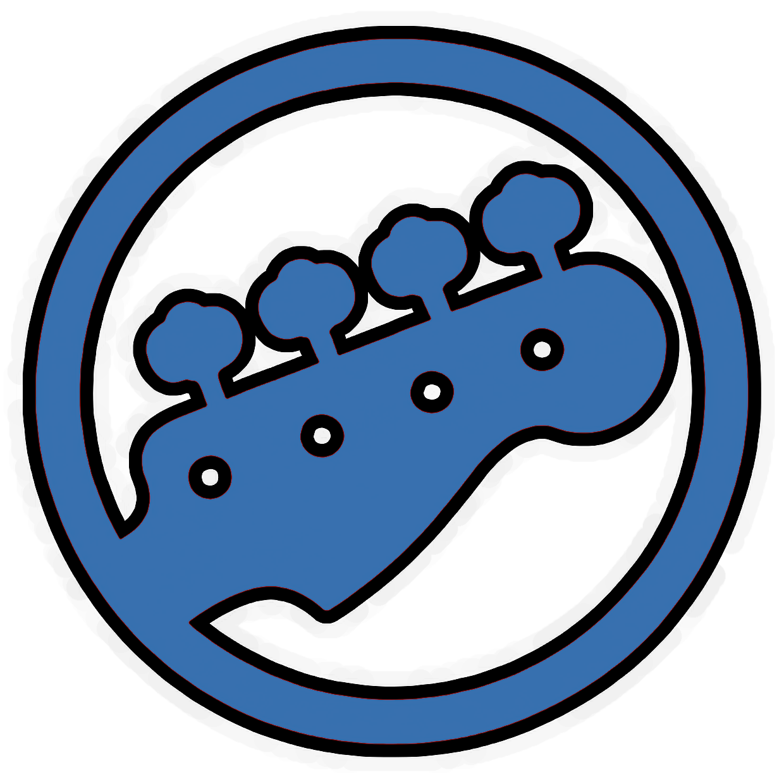
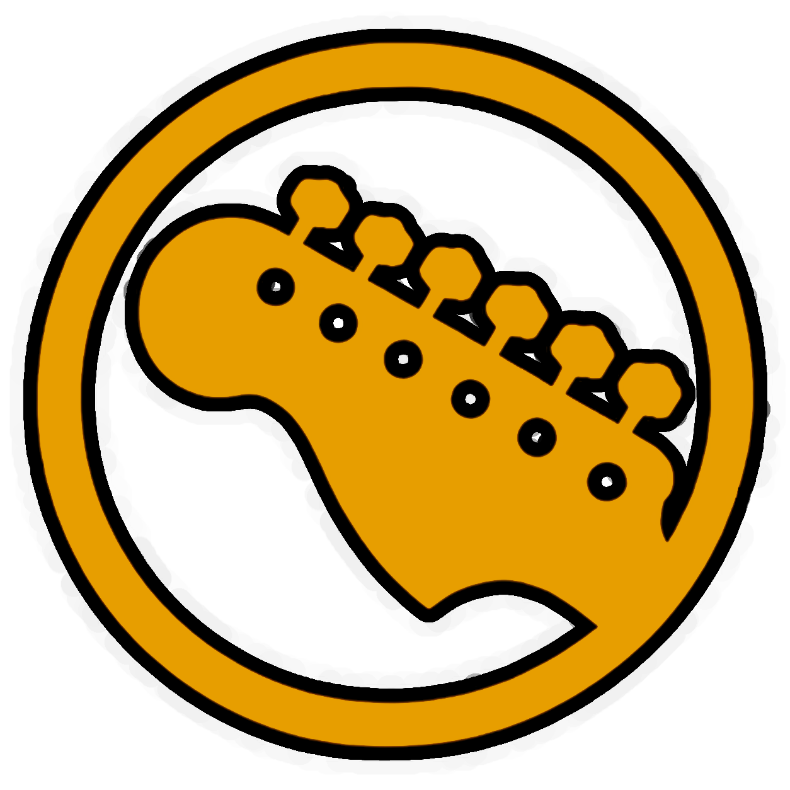

Une basse pour les partys
Plus de choix pour monter son band et une basse dédiée aux soirées, pour ceux qui aiment faire groover tout le monde.
Contribuer à la basse

Asteur On Jam, c'est du monde qui ose monter sur scène, un paquet d'instruments en plastique et beaucoup d'amour pour les soirées musicales. Si tu as envie de donner un coup de pouce, merci! Ça pourrait nous aider à entretenir et améliorer le matériel pour les prochains partys.
🎸 Découvrir les équipementsChoisis ce que tu aimerais encourager. Ce sont des idées d'équipements, sans montants cibles ni financement actif affichés pour le moment.

Plus de choix pour monter son band et une basse dédiée aux soirées, pour ceux qui aiment faire groover tout le monde.
Contribuer à la basse
Une deuxième pédale, des adaptateurs et des pièces de rechange pour que la batterie Rock Band continue de suivre le rythme.
Contribuer à la batterie
Pour chanter à plusieurs, remplacer le matériel fatigué et faire de la place à davantage de voix.
Contribuer aux microphonesCâbles, pièces, adaptateurs, rangement et réparations : les petits trucs qui gardent tout le monde sur scène.
Contribuer à l'entretienContribuer est entièrement volontaire. Ça ne donne aucune priorité dans la file et ce n'est pas nécessaire pour participer aux soirées.
Faire découvrir le projet, venir jouer, partager une idée ou prêter un instrument, c'est aussi une façon de soutenir Asteur On Jam!
✉️ Proposer un coup de mainCette page présente des possibilités de soutien, et non une collecte déjà ouverte. Les articles et les détails pourront évoluer avec le projet.